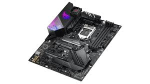
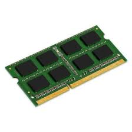

Venta de Piezas
BLST ofrece piezas electrónicas reacondicionadas y componentes recuperados de equipos reciclados. Todas las piezas están probadas y garantizadas para su correcto funcionamiento.
Ideal para talleres, reparadores y aficionados a la informática que buscan soluciones sostenibles y económicas.

Placa Base Intel
Compatible con procesadores i5/i7.

Memoria RAM 8GB
DDR4, velocidad 2666MHz.